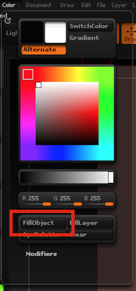

逆引きZBrush
概要
学んだ内容が溜まってきたので書く。
あいうえお順とかの並び替えは今後やる。
Version 4R7 P3 (64-bit) (473.64)
Editモードに入るには
Toolをどれか一つでもカンバスに置くとEditモードにできる。
置かないとできない。
左右対称の編集をするには
Xキー or Transform > Active Symmetry
カンバスにToolを置くには
Tool > CurrentTool(左上のやつ)に何が選ばれているか確認、

例えばポリゴン板を置きたければPlane3Dを選ぶ。

選んだ後にカンバス上をドラッグするとToolが置ける。
ここからEditモードに移行できる。
カンバスに表示された残像を消すには
Layer > Clearボタンで消せる

すべてのツールを表示、かつ今選んでいるツールだけを編集したい
Transform > Transp をオンにする
+
Transform > Ghost をオフにする。

これで、いろいろなツールを見ながら、選んだツールだけを編集可能になる。
アクティブなSubToolを切り替える
上下キーで切り替わる。
SubToolの一覧を表示する
nキーで、「現在ActiveなSubTool以外の一覧」が表示できる
ZSphereをポリゴンに変える
1.Tool > Adaptive Skin > Make Adaptive Skin
2.この時点で作成されたスキンがQuickPickや3DMeshesの中に追加されている
3.Tool > SubTool > Insert で読み込んで使う
4.元になったZSphereは自動的に何か変わることはないので、消したりとか。
ZSphereの一部を消す
altキーを押しながらZSphereの中心をクリックする。
最初の一個のSphereは消えない。
LightBoxを消す
,キーで消える
ツールの色を変える
Color > FillObject で色を一括で変えられる。
